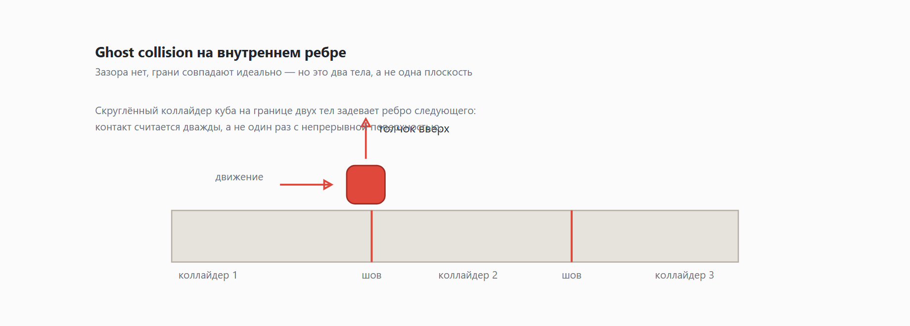
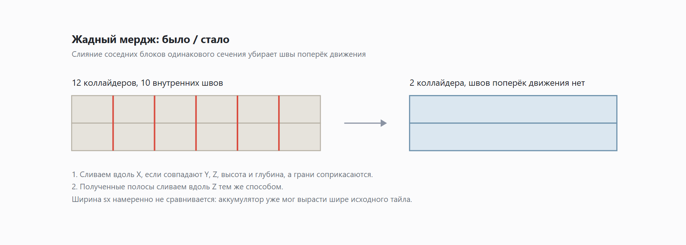

Мой куб спотыкался на идеально ровном полу. Пол был не виноват
Есть особый сорт багов: воспроизводится стабильно, выглядит абсурдно, а причина такая, что её нельзя увидеть — только вычислить.
У меня в браузерном платформере красный желейный куб катается по каменным плитам. Плиты описаны в JSON как отдельные тайлы 1×1×1, и для каждого я честно создавал свой статический коллайдер. Пол получался идеально ровный: боксы стоят встык, грань в грань, зазоров нет ни одного.
И на этом идеально ровном полу куб спотыкался. Не всегда, не сильно, но регулярно ловил микроскопический толчок вверх и терял скорость.
Первые полчаса я искал ошибку в уровне. Уровень был в порядке.

Виноваты внутренние рёбра
Это классические ghost collisions — беда всех физдвижков, где поверхность собрана из отдельных выпуклых тел.
Механика простая и обидная. Куб у меня не идеальный параллелепипед, а roundCuboid — скруглённый бокс с радиусом 0,08. Когда он скользит по одному коллайдеру и доезжает до края, движок передаёт контакт следующему. И это не один непрерывный контакт с одной плоскостью, а два независимых расчёта на границе двух тел. На долю кадра куб касается одновременно края первого бокса и ребра второго — и получает импульс, которого на настоящем полу взяться неоткуда.
Ключевое, что я долго не мог принять: зазора нет. Грани совпадают идеально. Проблема не в геометрии уровня, а в том, что физдвижок видит не «пол», а «много боксов, которые стоят рядом и, кажется, что-то замышляют».
Отсюда и решение: убрать швы там, где это возможно.
Жадный мердж: 135 коллайдеров превращаются в 30
Идея простая — перед загрузкой уровня в физику слить соседние блоки одинакового сечения в один большой бокс. Строка из шести тайлов должна стать одним коллайдером длиной шесть, а не шестью коллайдерами с пятью швами внутри.

Алгоритм двухпроходный:
- Сливаем блоки в «полосы» вдоль оси X.
- Полученные полосы сливаем вдоль оси Z — так соседние ряды одинаковой формы склеиваются во всё более крупные плиты.
Условие слияния вдоль X: совпадают Y, Z, высота и глубина, а грани по X соприкасаются — без зазора и без нахлёста:
function tryMergeAlongX(a: Box, b: Box): Box | null {
if (!approxEq(a.cy, b.cy) || !approxEq(a.cz, b.cz)) return null;
if (!approxEq(a.sy, b.sy) || !approxEq(a.sz, b.sz)) return null;
const aMaxX = a.cx + a.sx / 2;
const bMinX = b.cx - b.sx / 2;
if (!approxEq(aMaxX, bMinX)) return null;
const aMinX = a.cx - a.sx / 2;
const bMaxX = b.cx + b.sx / 2;
return {
cx: (aMinX + bMaxX) / 2, cy: a.cy, cz: a.cz,
sx: a.sx + b.sx, sy: a.sy, sz: a.sz,
};
}Тонкость, на которой я споткнулся первым делом: ширина sx намеренно не сравнивается. Аккумулятор к этому моменту уже мог вырасти шире исходного тайла, и если требовать равенства ширин, полоса перестаёт расти после первого же слияния. Очень логичная проверка, которая ломает весь алгоритм.
Баг, который съел половину времени: сортировка
Первая версия жадного прохода сортировала боксы просто по координате вдоль оси слияния. Выглядит настолько очевидно правильно, что я даже не подумал проверить.
Мердж не срабатывал. Вообще. Число коллайдеров после прохода почти не отличалось от числа тайлов — и, что самое противное, ничего не падало. Алгоритм честно отрабатывал и честно возвращал ровно то, что получил.
Причина в том, что уровень — не одна строка. Блоки из разных рядов имеют одинаковый x и в общем порядке идут вперемешку: тайл из ряда z = -1, тайл из z = 0, тайл из z = 1, снова z = -1… Жадный проход сравнивает соседние элементы массива, а соседями оказываются блоки из разных рядов. Аккумулятор сбрасывается на каждом шаге, и так до конца уровня.
Лечится двухуровневой сортировкой: сначала группируем по всему, что должно совпадать (для оси X это cy, cz, sy, sz — «сечение ряда»), и уже внутри группы сортируем по координате вдоль оси слияния:
const round = (v: number) => Math.round(v / EPS);
const groupKey = (b: Box) => [round(b.cy), round(b.cz), round(b.sy), round(b.sz)] as const;
const sorted = [...boxes].sort((a, b) => {
const ka = groupKey(a), kb = groupKey(b);
for (let i = 0; i < ka.length; i++) if (ka[i] !== kb[i]) return ka[i] - kb[i];
return coord(a) - coord(b);
});Округление ключа группы до EPS тут не косметика. Координаты приезжают из JSON и бывают результатом деления, так что два блока одного ряда могут отличаться на 1e-16. Без округления компаратор разведёт их по разные стороны и порвёт группу ровно там, где рвать нельзя.
Почему EPS = 1e-4, а не «ну примерно ноль»
Допуск выбран не наугад — я честно посчитал границы с двух сторон.
Погрешность double на таких величинах — порядка 1e-15. Значит 1e-4 больше неё на одиннадцать порядков и уверенно ловит «почти равные» координаты. С другой стороны, минимальный осмысленный зазор между блоками в моём мире — сантиметры, то есть 1e-2 в мировых единицах. Допуск на два порядка меньше и не склеит блоки, между которыми игрок должен пролезть.
Между этими двумя числами и живёт правильный EPS. Приятно, когда константу можно обосновать, а не «подобрать».
Почему я не мерджу по Y
Третьего прохода нет, и это осознанно. Вертикальные швы — пол одной платформы и потолок другой — skid-артефактов не дают: чтобы поймать ghost collision, кубу надо пересекать шов движением, а не стоять на одной поверхности. Плюс в текущих уровнях блоков, совпадающих по X, Z и сечению, но разной высоты, просто нет. Усложнять алгоритм ради гипотетического случая я не стал.
И два софтлока по дороге
Мердж убрал спотыкание, а следом вылезло ещё два способа испортить игроку жизнь.
Куб заклинивало в щели. Он въезжал в узкий разрыв между плитами и вставал намертво: трение о боковые стенки держало, а горизонтального контроля не хватало вытолкнуть. Лечение вышло грубым и работающим — трение самого куба выставлено в ноль:
cubeFriction: 0,Трение поверхности при этом осталось (0.8 у плитки). Rapier комбинирует трения двух тел как среднее, так что эффективное стало 0.4 — куб по-прежнему не скользит как по льду, но и не застревает в вертикальной щели.
Watchdog на случай, если всё-таки застряли. Чистое доменное правило: игрок жмёт кнопки, а куб за четыре секунды не сместился больше чем на 0,15 — респаун без штрафа по массе.
И одна строчка в этом правиле важнее всего остального: время копится только при активном вводе.
if (distance(pos, state.anchor) > TUNING.watchdogMinMove) {
return { state: initialWatchdog(pos), stuck: false };
}
if (!inputActive) {
return { state, stuck: false };
}Без этой проверки игрок, отошедший налить чаю, через четыре секунды телепортировался бы на чекпоинт. «Стою на месте» и «застрял» — разные состояния, и отличает их ровно наличие ввода.
Что забрать с собой
- Ровный на вид пол из отдельных коллайдеров не ровный для физического движка. Швы существуют, даже когда зазоров нет.
- Сортировка бывает важнее самого алгоритма. Неверный порядок обхода превращает жадный мердж в дорогой способ скопировать массив, и это не падает с ошибкой — просто тихо не работает.
- Если константа не обоснована с двух сторон, она подобрана. Разница вылезет через месяц, на чужом уровне.
Игра: cubanoid.vercel.app — браузер, без установки. Если найдёте место, где куб всё ещё спотыкается, я буду искренне рад и слегка расстроен.